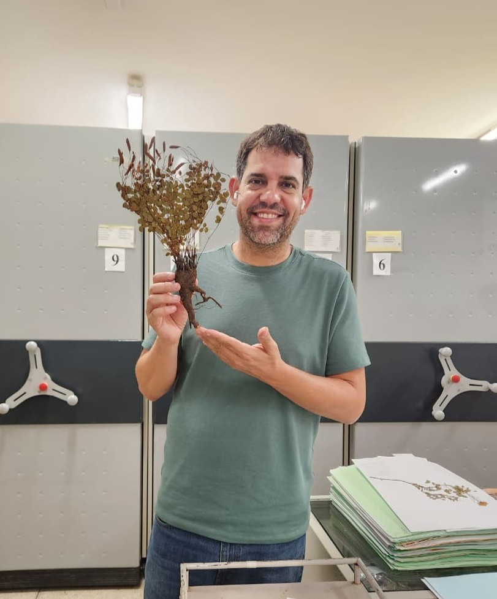

Equipe
Pesquisador principal (PI)

Prof. Dr. Anselmo Nogueira
Professor Adjunto na Universidade Federal do ABC (UFABC)
Bacharel e Licenciado em Ciências Biológicas pela Universidade de São Paulo (2002), com mestrado em Ecologia pelo Instituto Nacional de Pesquisas da Amazônia — INPA (2006) e doutorado em Botânica pelo Instituto de Biociências da USP (2011). Tem experiência com morfologia, sistemática filogenética, ecologia e biologia evolutiva aplicados na área de botânica. Em 2012 iniciou seu pós-doc em botânica e biologia evolutiva focados nas interações planta-animal pela USP, com seis meses na Universidade de Jaén (Espanha). Em 2015 iniciou um novo pós-doc na University of Arizona (Department of Ecology and Evolutionary Biology). Atualmente é Professor Adjunto na UFABC em São Bernardo do Campo–SP, ministrando disciplinas de botânica, evolução e biologia reprodutiva, entre outras. Coordena o Central Multiusuário de Biodiversidade e Conservação (CMBC) da UFABC desde 2023. Sua pesquisa foca na evolução morfo-funcional de caracteres das plantas, na dinâmica e evolução das interações planta-animal, e nos padrões de distribuição das plantas e seus fatores determinantes.
Orientações e supervisões
Alunos
Clique no nome para conhecer cada pessoa.
-
Bruna Barbosa
Doutorado direto pela UFABC; Evolução floral.
-
Luanderson Alencar
Doutorado pela UFPE; Mutualismo planta-formiga na Caatinga.
-
Emilly de Lima
Iniciação Científica pela UFABC; Morfologia floral e alometria.
-
Guilherme Mota
Mestrado pela UFABC; Ecologia de polinização por vibração.
Pós-Doutorado
-
Asmamaw Tesfaw
Pós-doutorado pela UFABC; Interação planta-bactérias fixadoras de nitrogênio.
-
Eduardo Nery
Pós-doutorado pela UFABC; Métodos filogenéticos comparativos.
Alumni
-
Amanda Vieira
Doutorado pela UFABC; Interações planta-animal.
-
Caroline Souza
Mestrado pela UFABC; Mutualismo planta-formiga e fixação de nitrogênio.
-
Douglas de Souza
Mestrado pela UFABC; Mutualismo planta-formiga e fixação de nitrogênio.
-
Lorena Valadão Mendes
Mestrado pela UNESP; Ontogenia dos mutualismos vegetais.
-
Luana Prochazka
Doutorado pelo IPA; Ecologia de comunidades.
-
Lucas Bartsch
Mestrado pela UFABC; Ecofiosiologia da nodulação sob estresse hídrico.
-
Matheus Siqueira
Mestrado pelo IPA; Ecofisiologia do mutualismo planta-formiga sob sombreamento.
-
Nathália Canassa
Mestrado pela UNESP; Ecologia de comunidades.
-
Tamiris Delgado
Mestrado e Doutorado pela UNESP; Morfologia floral e polinização por vibração.

Colaboradores
'Grandes descobertas e melhorias envolvem invariavelmente a cooperação de muitas mentes.' - Alexander Graham Bell
Nacionais
-
Juliana Rando
Especialista em sistemática de Chamaecrista e ecologia de plantas; UFOB - Bahia, Brasil.
-
Célio Angolini
Especialista em química de metabólitos e ecologia microbiana; UFABC - São Paulo, Brasil.
-
Danilo Centeno
Especialista em fisiologia e bioquímica vegetal e tolerância ao estresse; UFABC - São Paulo, Brasil.
-
Laura Leal
Especialista em relações ecológicas e comportamento de formigas; UFPR - Paraná, Brasil.
-
Ítalo Coutinho
Especialista em anatomia vegetal de estruturas secretoras e histoquímica; UFC - Ceará, Brasil.
-
Caian Gerolamo
Especialista em anatomia vegetal, biomecânica e hidráulica em plantas; URCA - Ceará, Brasil.
-
Vinícius Brito
Especialista em biologia reprodutiva, polinização e genética de populações; UFU - Minas Gerais, Brasil.
-
Juliana El Ottra
Especialista em morfologia e anatomia floral; EACH-USP - São Paulo, Brasil.
-
Suzana Alcantara
Especialista em ecologia de comunidades e evolução morfológica; UFSC - Santa Catarina, Brasil.
-
Rafaela Trad
Especialista em sistemática e evolução vegetal; UNESP - São Paulo, Brasil.

Internacionais
-
Marcelo Pace
Especialista em evolução anatômica e ontogenia vegetal; UNAM - Ciudad de México, México.
-
Alexandre Zuntini
Especialista em taxonomia e sistemática de angiospermas; Kew - Richmond, Reino Unido.
-
Pedro Rey
Especialista em ecologia, evolução e dinâmica de populações e comunidades; UJA - Jaén, Espanha.
-
Judith Bronstein
Especialista em ecologia e evolução de interações interespecíficas; Arizona State University, Estados Unidos.
-
Euan James (in memoriam)
Especialista em fixação biológica de nitrogênio entre leguminosas-rizóbios; Escócia, Reino Unido.
-
Joel Klein
Especialista em genômica comparativa e evolução de simbioses em leguminosas; Oxford, Reino Unido.
-
Wouter Kohlen
Especialista em plasticidade do desenvolvimento vegetal; Maastricht, Países Baixos.